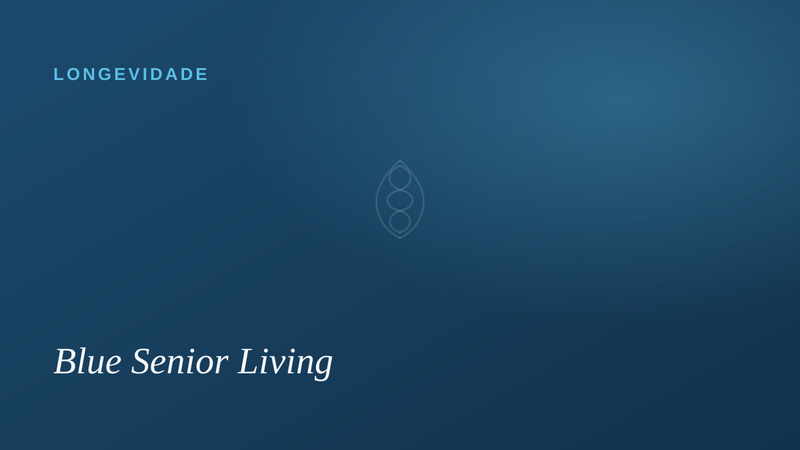

Longevidade
O que são as Blue Zones e o que elas ensinam sobre envelhecer bem

Existem lugares no mundo onde chegar aos 90 ou 100 anos com saúde e lucidez é mais comum do que em qualquer outro. O pesquisador que as estudou as chamou de Blue Zones — Zonas Azuis. Não são spas nem clínicas: são comunidades comuns, em cinco cantos diferentes do planeta, que compartilham um jeito parecido de viver.
Não é sorte. É um jeito de viver.
O que mais surpreende é a simplicidade. Nessas regiões, as pessoas se mantêm em movimento de forma natural ao longo do dia. Comem comida de verdade, na medida certa, em boa companhia. Cultivam amizades que duram a vida inteira. Pertencem a uma comunidade. E acordam com um motivo para o dia — algo que em Okinawa, no Japão, chamam de ikigai.
Nenhum desses hábitos é milagroso sozinho. Juntos, ao longo de décadas, fazem diferença — não só em quantos anos se vive, mas em como se vive cada um deles.
O que isso ensina sobre o cuidado sênior
As Blue Zones lembram algo fácil de esquecer: envelhecer bem tem menos a ver com remédios e mais com sentido. Propósito, vínculos, movimento, boa comida e o sentimento de pertencer não são luxo — são parte do cuidado.
É essa a inspiração que carregamos no Blue: traduzir esses princípios em rotina — dias com convívio e propósito, refeições preparadas com carinho, o corpo ativo no ritmo de cada um — dentro de um cuidado sério e seguro. Porque viver mais só vale a pena quando se vive bem.